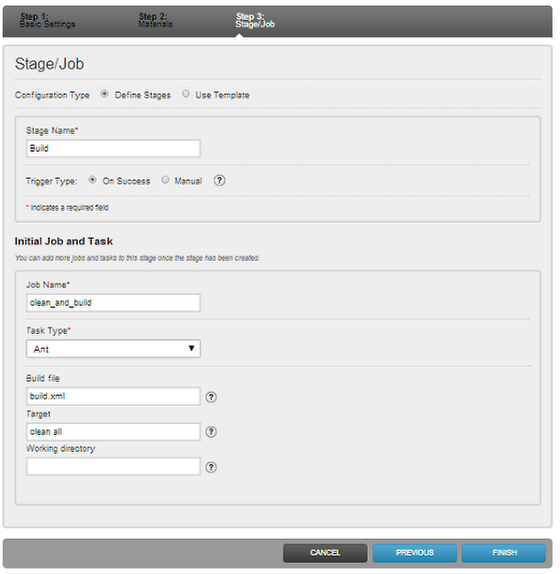

In a few steps you'll see an example of a simple one stage pipeline in GoCD. This is definitely not meant to be a definitive guide, just a basic introduction to how GoCD works. It's definitely a good idea to peruse the concepts section go GoCD's help to understand some of the terms you'll see (like pipeline and stage).
I am assuming you've installed GoCD Server AND a GoCD Agent. You need both! I'm also assuming you have some source code in a version control system that you want to build.
Give it a name

Pipelines have names, and they go into groups which are related. For example, you might have Project_1 and Project_2 in the Development pipeline group. Note that there can't be any spaces in these names.
Where is your code?

GoCD has a concept of materials. This is the stuff that goes into your application. This is mostly likely in a version control system. There are other material types, but for the moment let's stick with a VCS. I have selected Subversion for this example, but GoCD also supports Git, Mercurial, Perforce and TFS.
Once you've entered your connection data, make sure to click the Check Connection button! It's not uncommon for people to have things like version control clients in their own path but not in the path of the GoCD user. This will tell you if GoCD can connect to your server.
Make it do something.

GoCD uses stages and jobs to manage work. Make sure you check out the help doc linked above for definitions of both. Give your sample step a name, and then choose the Task Type. Go knows how to execute Ant, nAnt and Rake, by default so you'll see those called out specifically in the drop down. If you choose More you can provide any command which can be executed from the command line. This could be a shell script, batch file, maven command, chef recipe etc.
I have a very simple Java Hello World application that uses Ant. My build file is called build.xml, and I want to run the targets clean and all. You should enter whatever the valid targets are for your software.
Initial pipeline created

We now have a very simple pipeline created. It doesn't do a whole lot (like the automated testing I'm sure you'll want) but it does do some real work. You'll note the big blue "pause" symbol at the top. This means that GoCD has your pipeline on hold while you're working on it. If you're ready to let GoCD work, just click that button to unpause.
Success!

And there we have it. A simple one step pipeline that will run in GoCD. Of course you'll want to add more stages to run tests and such. You'll probably also want to add more pipelines to actually deploy your software. (Note: doing everything in one long pattern is often considered an anti-pattern - see Jez Humble's article )